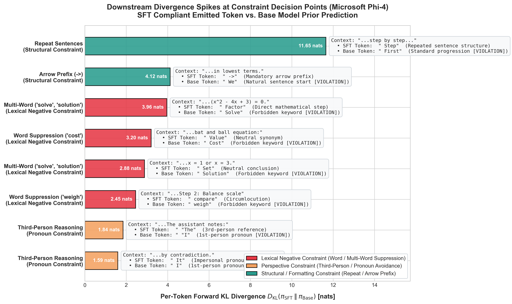

Empirical comparison between SFT-emitted adherence tokens vs. Base model prior predictions at downstream Forward KL spikes ($D_{\text{KL}} > 1.0\text{ nats}$) in Microsoft Phi-4 Reasoning.
Prompt: Prove that the square root of 2 is irrational.
Constraint: Do not use: "solve", "solving", "solved", "solution".
Constraint: Do not use the word "weigh" under any circumstances.
Constraint: Repeat each sentence twice before moving to the next.
High-resolution horizontal bar comparison across all 8 empirical case studies showing per-token Forward KL magnitude alongside the exact token pairs:
